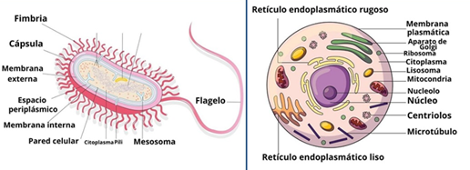
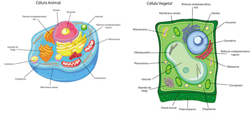
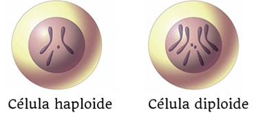
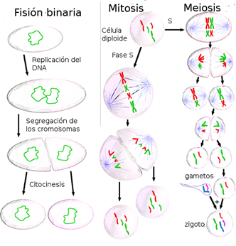

La célula
La célula es la unidad fundamental de la vida. Todos los organismos vivos están formados por células, desde los más simples (como las bacterias) hasta los más complejos (como los seres humanos). A pesar de su enorme diversidad, todas las células comparten principios comunes: contienen material genético, poseen estructuras que les permiten generar energía y mantener su organización interna, y son capaces de reproducirse.
Podemos pensar en la célula como una “fábrica” en miniatura: el núcleo sería la oficina central donde se almacena la información y se toman las decisiones; las mitocondrias, las centrales energéticas; el retículo endoplasmático y el aparato de Golgi, las líneas de producción y distribución; y la membrana plasmática, la frontera que regula la entrada y salida de materiales.

Representación 3D de una célula
Principales características
- Unidad básica de vida: constituye la mínima estructura capaz de realizar de manera autónoma las funciones vitales.
- Metabolismo propio: realizan reacciones bioquímicas que les permiten transformar nutrientes en energía y biomoléculas.
- Información genética: almacenan ADN, que dirige la actividad celular y se transmite a la descendencia.
- Reproducción: pueden dividirse, ya sea por mitosis, meiosis o fisión binaria.
- Adaptabilidad: responden a estímulos externos, se comunican con otras células y se adaptan a cambios ambientales.
Organización celular
Procariotas
- Carecen de núcleo definido: el ADN se encuentra en el citoplasma, en una región llamada nucleoide.
- Son más pequeñas y sencillas estructuralmente que las eucariotas.
- No poseen orgánulos membranosos complejos, aunque sí estructuras como ribosomas, membrana plasmática y, en muchos casos, pared celular.
- Ejemplos: bacterias y arqueas.
Eucariotas
- Presentan un núcleo delimitado por una membrana nuclear donde se almacena el ADN.
- Tienen orgánulos especializados (mitocondrias, retículo endoplasmático, lisosomas, cloroplastos en vegetales).
- Suelen ser de mayor tamaño y complejidad.
- Ejemplos: células animales, vegetales, fúngicas y protistas.

💡 Endosimbiósis
Es un proceso evolutivo en el que una célula vive dentro de otra estableciendo una relación de beneficio mutuo (simbi = vivir juntos, endo = dentro).
Endosimbiósis mitocondrial:
Una célula eucariota primitiva engulló una bacteria aerobia (alfa-proteobacteria).
Esa bacteria se convirtió en la mitocondria, encargada de producir energía (ATP).
Endosimbiósis cloroplástica:
Una célula eucariota engulló una cianobacteria fotosintética.
sa cianobacteria se transformó en el cloroplasto, responsable de la fotosíntesis en plantas y algas.
Tipos de células eucariotas
Células animales
- No poseen pared celular ni cloroplastos.
- Su membrana plasmática es flexible, lo que favorece formas diversas y dinámicas.
- Tienen centriolos (implicados en la división celular) y numerosos lisosomas (orgánulos digestivos).
Células vegetales
- Poseen pared celular rígida de celulosa que les da soporte y forma definida.
- Contienen cloroplastos, orgánulos especializados en la fotosíntesis.
- Presentan grandes vacuolas que almacenan agua, nutrientes y desechos.

Según el número de juegos cromosómicos
- Haploides (n): contienen un único juego de cromosomas (ej.: gametos como óvulos y espermatozoides).
- Diploides (2n): poseen dos juegos de cromosomas, uno heredado de cada progenitor (ej.: células somáticas en la mayoría de organismos multicelulares).

Funciones vitales de la célula
- Nutrición y metabolismo: obtienen energía y materiales para mantenerse activas.
- Síntesis de biomoléculas: producen proteínas, lípidos, ácidos nucleicos y otras moléculas esenciales.
- Comunicación celular: se envían señales químicas y eléctricas para coordinar funciones en organismos multicelulares.
- Reproducción: aseguran la continuidad de la vida a través de división celular.
- Evolución: las mutaciones en el ADN celular son la base de la variabilidad genética y la evolución biológica.
La célula en el contexto del Dogma Central
La célula es el escenario donde ocurre el dogma central de la biología molecular:
- El ADN se replica para asegurar la herencia genética.
- El ADN se transcribe en ARN como paso intermedio de expresión.
- El ARN se traduce en proteínas, las moléculas que llevan a cabo la mayor parte de las funciones celulares.
Por tanto, entender la organización y funciones celulares es el primer paso para comprender cómo se regula y se transmite la información genética.
Importancia en bioinformática
La bioinformática nos permite analizar a gran escala la información celular en diferentes niveles:
- Genómica: estudio del ADN y sus variaciones.
- Transcriptómica: análisis de los ARN expresados en distintos tipos celulares.
- Proteómica: identificación de proteínas y sus interacciones.
- Metabolómica: caracterización de las rutas metabólicas.
Estos enfoques computacionales son esenciales para comprender la célula como un sistema complejo y dinámico, y para aplicar ese conocimiento en biomedicina, biotecnología y ciencia de datos.
Para reflexionar: si la célula fuera una empresa tecnológica, ¿qué papel desempeñaría el núcleo, qué función tendrían las mitocondrias y cómo podríamos entender la comunicación celular en términos de redes distribuidas?
💡 Reflexión
Si la célula fuera una empresa tecnológica:
El núcleo sería el departamento de I+D y dirección general: almacena la información estratégica (ADN) y decide qué instrucciones se ejecutan.
Las mitocondrias actuarían como la central eléctrica de la empresa, garantizando el suministro energético necesario para que los demás departamentos funcionen.
La comunicación celular equivaldría a las redes distribuidas y los sistemas de mensajería interna: permiten coordinar procesos entre distintas sucursales (células) y responder rápidamente a los cambios en el entorno.
El ciclo celular
El ciclo celular es el conjunto de etapas que atraviesa una célula desde que se forma hasta que se divide en dos células hijas. Se divide en dos fases principales:
Interfase (I)
Corresponde al período de crecimiento y preparación de la célula para dividirse. Aunque no se ve al microscopio tanta actividad como en la mitosis, es la fase donde ocurren procesos esenciales, incluido el copiado del ADN.
- G1 (Gap 1): la célula crece, sintetiza proteínas y se prepara para la replicación.
- S (Síntesis): se produce la replicación del ADN, generando dos copias idénticas de la información genética.
- G2 (Gap 2): la célula continúa creciendo, repara posibles errores en el ADN replicado y se prepara para la mitosis.
Fase M (Mitosis)
Es la división celular propiamente dicha, en la que el material genético (ya duplicado) se reparte equitativamente entre las dos células hijas. Incluye varias subfases (profase, metafase, anafase y telofase), seguidas de la citocinesis (división del citoplasma).

Figura: Fases de la división celular
División celular: tres estrategias
La división celular es un proceso esencial para la vida, ya que permite la reproducción de los organismos, el crecimiento y la renovación de tejidos. Existen diferentes mecanismos según el tipo de célula y organismo: fisión binaria, mitosis y meiosis.
Fisión binaria
- Propia de organismos procariotas (bacterias y arqueas).
- El ADN se replica y se fija a diferentes regiones de la membrana.
- La célula se alarga, los cromosomas se segregan y finalmente ocurre la citocinesis, dando lugar a dos células hijas genéticamente idénticas.
👉 Es un mecanismo simple y rápido, ideal para la reproducción asexual.
Mitosis
- Ocurre en células eucariotas somáticas (no sexuales).
- Antes de dividirse, durante la fase S del ciclo celular, el ADN se duplica.
- En la mitosis, los cromosomas se condensan y se reparten equitativamente entre dos núcleos hijos (profase, metafase, anafase y telofase).
- Finalmente, la citocinesis genera dos células hijas diploides, genéticamente idénticas a la célula original.
👉 Es fundamental para el crecimiento, reparación de tejidos y reproducción asexual en organismos multicelulares.
Meiosis
- Es exclusiva de células sexuales (germinales).
- Incluye dos divisiones sucesivas tras una única replicación del ADN:
- En la meiosis I, se separan los cromosomas homólogos.
- En la meiosis II, se separan las cromátidas hermanas.
- El resultado son cuatro células haploides (gametos), cada una con la mitad del número de cromosomas.
👉 Este proceso es la base de la reproducción sexual, ya que genera variabilidad genética a través de la recombinación y la segregación independiente.

Figura: comparación entre los mecanismos de división celular. A la izquierda, la fisión binaria en procariotas; en el centro, la mitosis en células somáticas; y a la derecha, la meiosis en células germinales.